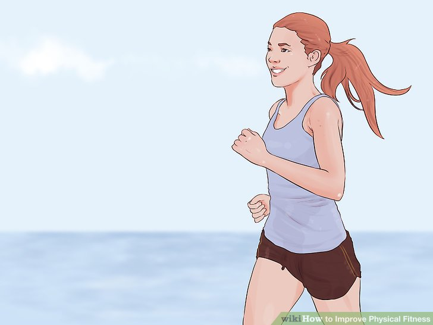
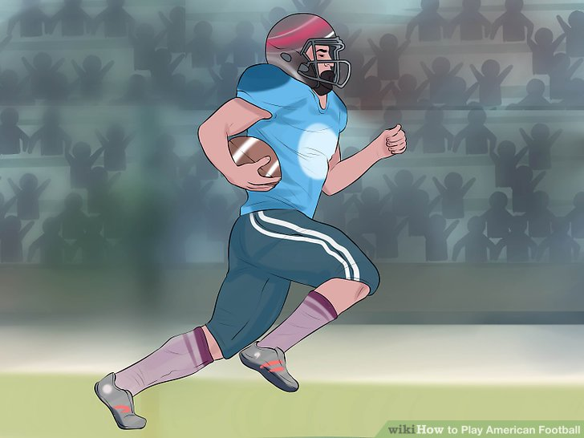
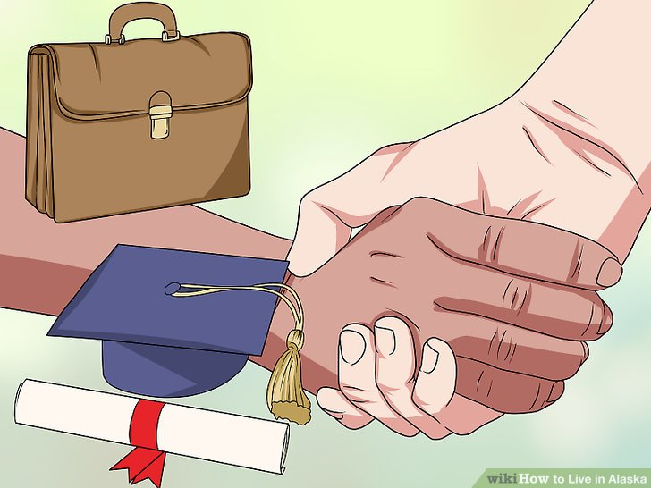
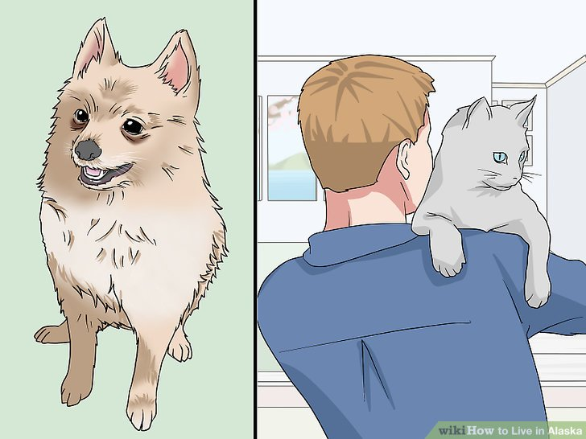

| Image |
Caption |
Description |
Points |

|
Start small |
Although it is rare, jumping right into vigorous exercise after being sedentary for a long time can increase your risk of having a heart attack; therefore, it is best to go slow and start with something less intense, such as walking, swimming, or biking. |
Starting slow will also help to reduce your chances of getting injured, which can put a hold on your fitness efforts. After a while, you can increase your activity intensity and duration, such as from walking to jogging, or biking on a flat surface to biking on a somewhat hilly surface, or swimming for 45 minutes instead of 30 minutes. Starting with small, more easily-achieved goals helps people stick with their plans. Drastic changes are harder to stick with — find something that you enjoy and seems doable. |

|
Fight your way forward with running plays |
Generally the most common type of play seen in football is the running play. Running plays tend to yield less yardage per play than passing plays but are much less likely to accidentally transfer control of the ball to the other team. They have the added advantage of getting the football out of the quarterback's hands quickly before an aggressive defense can reach his position and cost the team extra yards. If the ball is dropped during a running play, it is called a fumble. A fumbled ball can be picked up by either the other team, or the team that fumbled it to gain or regain control of it. |
The quarterback normally hands the ball off to a teammate (typically a running back) to execute a running play, but he can also choose to run the ball himself. Being able to think quickly and assess the situation as it changes is a vital skill for a quarterback to help him decide when to run the ball on his own. Running plays have the benefit of being difficult to see in detail from behind the defensive line. Very often, the offense will try to trick the defense by seeming to hand the ball off to two or even three different runners. When the ruse works, the one runner who actually has the ball can sometimes break past the defense before they know what has happened and run all the way down the field for an easy touchdown. |

|
Secure a job before making your move |
Unemployment rates tend to be high in Alaska, so make sure you have a job before you move. If you don’t have a job, make sure you have enough money saved for a ticket home in case your job search turns up short. |
Big cities have a lot more jobs than smaller towns, and many people choose to commute so they don't have to pay city living prices. Some seasonal work might be available at hotels or parks, but you should try to find a permanent position as soon as possible. |

|
Consider adopting a furry friend to be your companion |
Most cities and towns in Alaska are extremely dog-friendly. There are plenty of places for a dog to run, jump, and play. Visit a local animal shelter when you’re settled in Alaska to pick out an animal friend who’s right for you and your schedule. |
If you’re not interested in getting a dog, cats also make great companions, and there are many cats in need of a home at shelters throughout Alaska! |
{kind=link}
{kind=link}
{kind=link}
{kind=link}